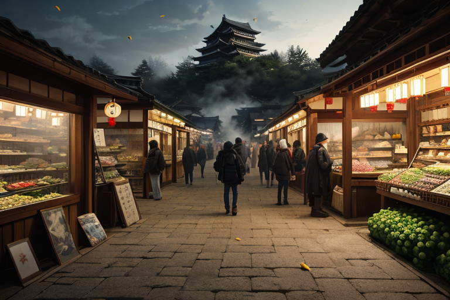
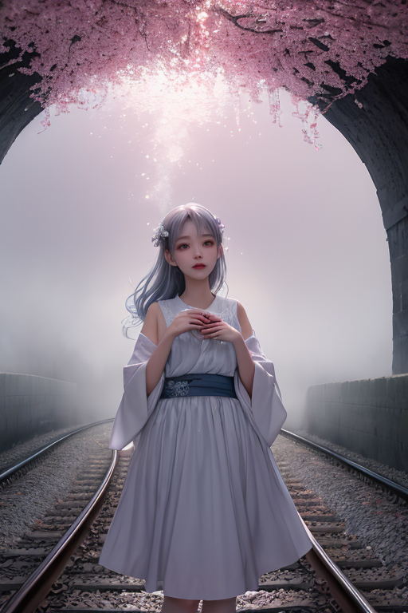
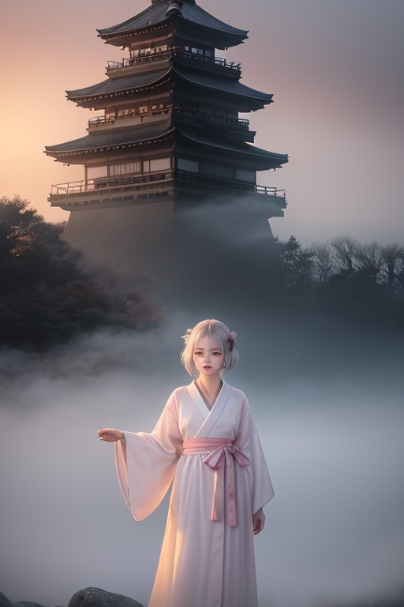
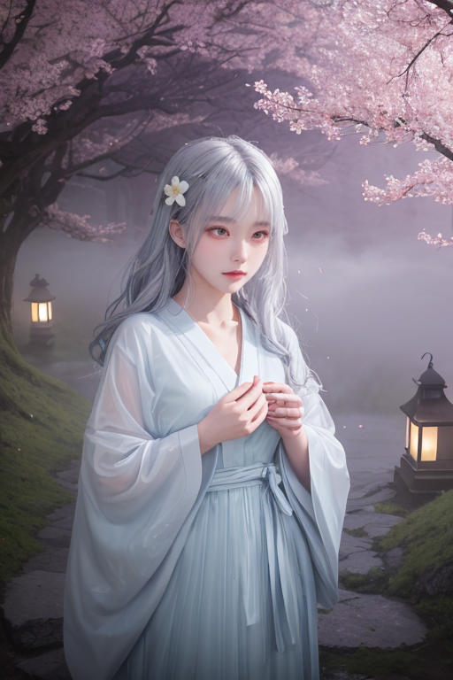

第一章 現実の青森
あなたはまだ気づいていない。この土地にも、王がいることを。
弘前城の石垣は、春の訪れを待つリンゴ畑に囲まれている。観光バスが列をなし、土産物屋では津軽塗の小箱やリンゴ飴が並ぶ。活気は確かだ。しかし、アオモリア・レヴナントは、その石垣の根元に積もった昨年の落ち葉の下で、微かな歪みを感じ取っていた。城を支える地盤の、ごくわずかな疲労。それは、百年、二百年という商都・弘前の歴史そのものの重みだった。
彼は市場の喧噪の中に立つ。活気は欲望と希望の表れだが、その裏側には常に「終わり」への怯えが潜む。商いが滞ること、港から船が消えること、季節が過ぎ去ること。人々はその終わりを恐れ、必死に今日を賑わわせる。王は静かに目を閉じ、地中の歪みに手を触れる。大きな災いではない、ただの経年劣化だ。彼はその進行を、ほんの少しだけ遅らせた。崩壊を止めることはできない。彼にできるのは、終わりが訪れるその時まで、人々が歩き、商い、生きる時間を、ほんのわずかだけ延ばすことだけだ。
終わりは、本当に終わりか？ 石垣の隙間から、新しい草の芽が顔を出していた。

第二章「歪みの兆候」
青函トンネルを抜ける特急列車は、津軽海峡の底を走り抜け、本州最北の地へと人と金を運び続けていた。港町・青森の駅前は、観光客と地元の商人の熱気であふれている。しかし、王の目には、その活気の底を流れる、かすかな「澱み」が見えていた。物流データの周期に生じた0.1秒の遅れ。特定の商店街の客足が、統計的に説明のつかない微減を示す傾向。それは大地震のような劇的な歪みではなく、経済と人の流れという血管に沈殿し始めた、目に見えない「老廃物」だった。
王は市場の雑踏に紛れ、人々の会話の端々に耳を澄ませた。「今年のリンゴの花、少し遅い気がする」「親父の代からの店、次の冬まで持つかな」。それらは単なる愚痴かもしれない。だが、それらが積み重なる時、土地そのものの「息遣い」が変わっていく。王は手に持ったリンゴジュースの紙パックを軽く握り、その中を流れる液体の動きを、ほんの一瞬だけ調整した。澱みを解消することはできない。彼にできるのは、その澱みが循環を完全に止めるまでの時間を、ほんの少しだけ引き延ばすことだ。
ネブラが彼の背後に静かに立つ。「終わりは、流れが止まることですか」。王は答えない。港から吹く風が、活気の裏に潜む、小さな終わりの予感を運んでくる。
第三章 王の葛藤
青函トンネルの開通は、津軽に新たな流れをもたらした。人の流れ、金の流れ、活気の奔流。王は弘前の街を見下ろし、その繁栄の「歪み」を感じ取る。開発の熱は、時に土地の記憶を、ゆっくりと終わらせようとしていた。
「守るべきは、人の命と、この土地の『息』です」
ネブラの声は霧のように柔らかい。王は頷く。彼の役目は、流れを止めることではない。暴走する欲望という「歪み」が、土地そのものの循環を断ち切る前に、ほんの少しブレーキをかけることだ。リンゴ畑が宅地に変わるその速度を、わずかに緩める。港に集まる物流の熱が、海の生態を圧迫する力を、かすかに分散させる。
終わりは、本当に終わりか。開発という名の「終わり」の裏側で、新しい命が芽吹く瞬間もまた存在する。王は、ただそのバランスを見つめる。全てを守ることはできない。彼に許されたのは、終焉をほんの一瞬先送りし、再生の可能性を、ほんの少しだけ大きくすることだけだった。

第四章 妖精との対話
弘前城の石垣に手を当てる王の背後で、ネブラが静かに語り始めた。「この石も、一度は終わったものよ。築城のため山から切り出され、役目を終えた廃石とされた。でも、津軽の冬と戦う人々が、それを拾い、積み上げ、城壁とした。終わりは、次の役目の始まりでもある」
港の倉庫街を歩きながら、ネブリナが林檎を一つ転がす。「商いも同じ。腐るという終わりを恐れ、人々はジャムにし、ジュースにし、サイダーに変える。この町の活気は、終わりを『別の何か』に変える欲望そのもの」
王は黙って聞く。彼らが調整する歪みもまた、終わりの予感だ。地盤の緩み、物流の集中、過疎の波。全ては「終わり」の一形態。妖精たちの言葉は、彼に問いかける。その終わりを、ただ遅らせるだけか。それとも――。
恐山を望む丘で、ネブラが王の背中にそっと触れた。「イタコは、亡き人の声を『今』に再生するでしょう？ あなたの仕事も、きっと同じ。終わりの瞬間を、ほんの少しだけ形を変えて、次の『今』へと繋ぐこと」

第五章 微調整と余韻
青函トンネルを抜ける夜行列車の窓に、津軽海峡の暗い水が映る。王は車内の温もりと、海底を走る鉄の歪みを感じていた。彼は目を閉じ、ほんのわずかな力を、地中の一点へと注ぐ。それは、誰も気づかない微調整だ。明日の朝、ここを通過する貨物列車の振動が、僅かに軽減される。積み荷の林檎が、一つも傷つかないように。
弘前城の石垣の下、老いた桜の根元で、ネブラが霧をまとう。彼女は、この土地に積もった「終わり」の記憶――廃城の嘆き、飢饉の絶望、過疎の寂しさ――を静かに抱きしめ、再生の種として土に返す。王の調整は、終わりを消さない。ただ、その衝撃を分散させ、受け止める器を、ほんの少しだけ増やす。
ねぶた会館を出た観光客の群れが、交差点に差し掛かる。王が指先を動かす。信号の切り替わりが0.5秒早まり、一台のトラックの速度が1キロ落ちる。誰も気づかない偶然の連鎖が、一人の子供の転倒を防ぐ。それは救済ではない。ただ、一つの「終わり」が、別の形の「始まり」へと、目に見えぬほどに軌道を修正される瞬間だ。
終わりは、本当に終わりか。彼が調整するその先に、傷ついた林檎から新しい苗木が育ち、過疎の集落に移住者の灯がともり、亡き人の思い出が語り継がれる「今」が、確かに生まれている。
あなたの町にも、王がいる。